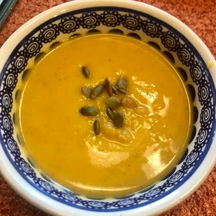

Acorn Squash Soup

Description:
A warm hug for your heart!
This recipe makes 6 servings, is a perfect addition to any Autumn day, and enjoyed with loved ones.
This recipe is from allrecipes all credit goes to the creator. The original recipe may be found here.
Ingredients:
- 2 Acorn Squash - halved and seeded
- Water - to preferemce
- 3 Tbs. Unsalted Buttere
- 1 Large Sweet Onion - chopped
- 1 Clove Garlic - minced
- 3 ½ C. Low-Sodium Chicken Stock
- ¼ C. Half-and-Half
- ½ Tsp. Ground Nutmeg
- ½ Tsp. Ground Cinnamon
- 1 Pinch Salt and Ground Black Pepper - to taste
Steps:
- Prehead oven to 400℉ or 200℃
- Place squash cut-side down in a backing dish and pour enough water in to cover the dish bottom
- Bake squash in preheated oven until easily pierced with a knife or approximately 45 minutes
- Remove from oven and cool until easil handled
- Scoop flesh into bowl and set aside
- Melt butter in pot over medium-high heat then add onion, carrot, and garlic
- Cook and stir until onion has softened and turned translucent, around 5 to 7 minutes
- Pour chicken stock into pot then stir in squash and simmer for 20 minutes
- Fill blender halfway with soup mixture then pulse a few times while holding lid down
- Blend until smooth then return to pot, may need to puree in batches depending on blender size
- Stir in half-and-half, nutmeb, and cinnamon then season with salt and pepper
- Add water to thin soup if desired